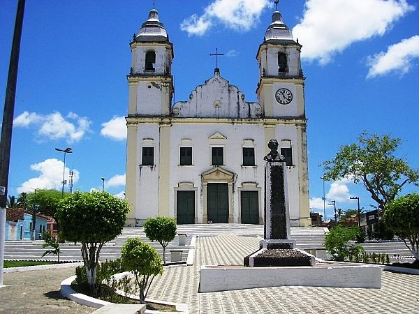

Ilha das Flores
História
A história dessa cidade começou em 15 de fevereiro de 1826, com a chegada dos padres jesuítas em Cajuípe de Cima, Brejo Grande. Eles permaneceram por muitos anos realizando missões em várias localidades, onde recebiam de presentes bois com os quais formaram um arraial onde está implantada Ilha das Flores.
No local escolhido, que recebeu o nome de Ilha da Boa Vista e depois Alto de Ilha dos Bois, foram construídos um curral e uma casa. Quase dez anos depois, em 15 de março de 1835, os padres jesuítas foram expulsos pelas tropas portuguesas e entregaram as terras ao chefe político da região, o coronel Agripino do Aracaré, de Vila Nova, hoje Neópolis. Esse coronel prosseguiu comprando e vendendo gado até sua morte, quando a esposa assumiu os negócios. Porém não deu certo, ela acabou vendendo a boiada e doando as terras ao padroeiro do município, Santo Antônio. A terra doada foi dividida entre vários posseiros, que construíram dezenas de barracas no local e deram o nome de Arraial de Santo Antônio.A Ilha prosperou bastante. Em 7 de abril de 1947, com a iniciativa do farmacêutico ilhense Luiz Ferreira Lisboa, hoje com 92 anos, passou à condição de povoado. Na época, ele era prefeito de Parapitinga, hoje Brejo Grande, e conseguiu em 15 de abril de 1950, através da lei 823, transformar a povoação em vila.
Luiz Lisboa (antigo dono da Fazenda Cabacinha, ex-delegado, ex-vereador e ex-prefeito)foi também o responsável pela emancipação da vila. Enquanto administrava Brejo Grande, providenciou a documentação necessária para desmembrar o lugar onde nasceu do município do qual era prefeito.Também pequeno município visitado por turistas e conhecido por sua beleza do rio São Francisco.
fonte: https://pt.wikipedia.org/wiki/Ilha_das_Flores_(Sergipe)Pontos Turísticos
Praça da Cidade
Uma cidade as margens do litoral brasileiro, com muita diversidade cultural. Tem muitas opções para o Turismo de Aventuras, Lazer, Ecoturismo e Esportes de Aventuras. Uma cidade muito hospitaleira, calma e cheia de carisma, com um ar muito grande de cidade do interior, com pessoas carismáticas e com um clima ótimo.
Dados Gerais de acordo com o IBGE
| Prefeito (a) | Robson Martins de Lima |
| Vice-Prefeito (a) | Eleni Ferreira Lisboa |
| Site do município | https://ilhadasflores.se.gov.br/ |
| Área territorial | 52,816 km² |
| População estimada | 8.348 pessoas |
| Densidade demográfica | 158,1 hab./km² |
| IDHM | 0,562 |
| PIB per capita | R$ 4.341,14 |